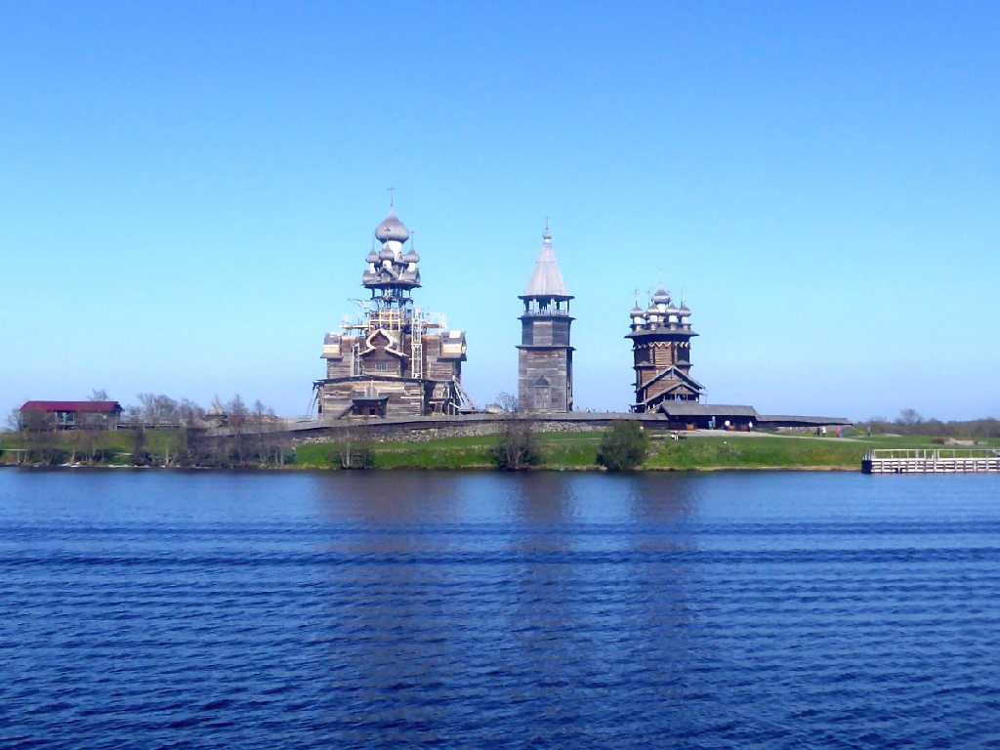
Preobrazhenskaya church Belfry Pokrovskaya church Pogost Lake Ladoga Kizhi
キジ島の木造教会 顕栄聖堂 鐘楼 生神女庇護聖堂
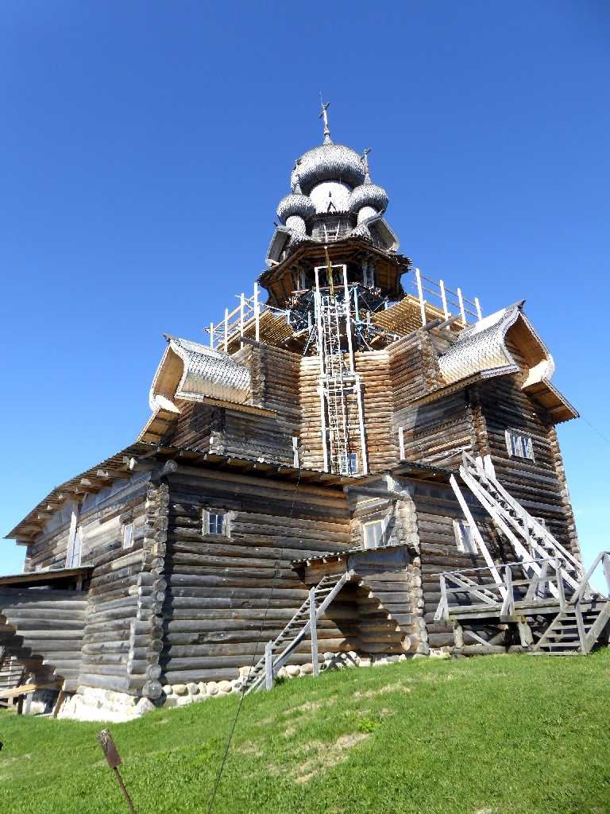 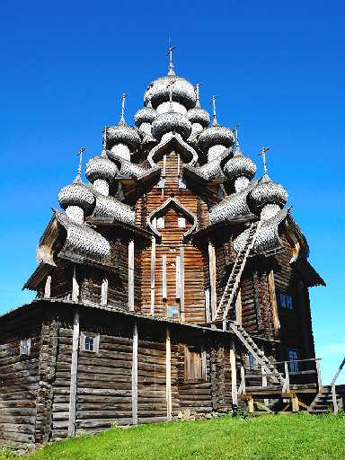
Preobrazhenskaya church
１７１４年に再建された２２の玉ねぎ型ドームを持つ高さ３７ｍの顕栄聖堂は暖房が無く夏の教会として利用された 訪れたときは木造の老朽化による補修中であった
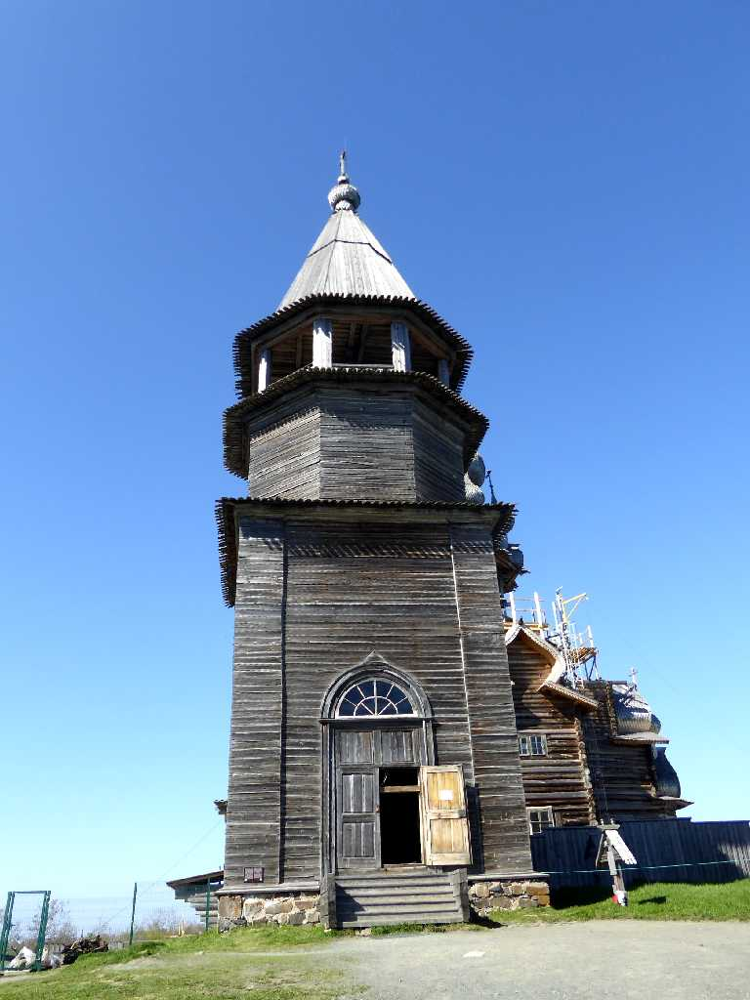
Belfry
１８７４年に建てられた高さ３０ｍの８角形の屋根を持つ鐘楼
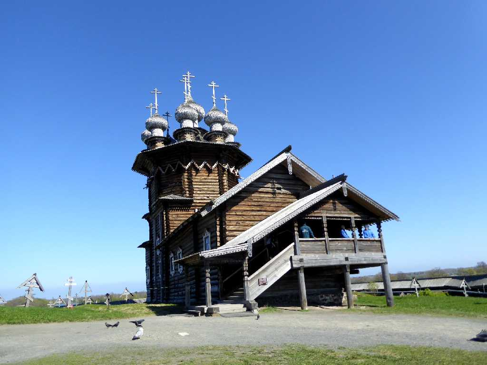
Pokrovskaya church
１７６４年に建てられた９の玉ねぎ型ドームを持つ高さ３２ｍの生神女庇護聖堂は１０月１日から復活祭までの冬の教会として利用された
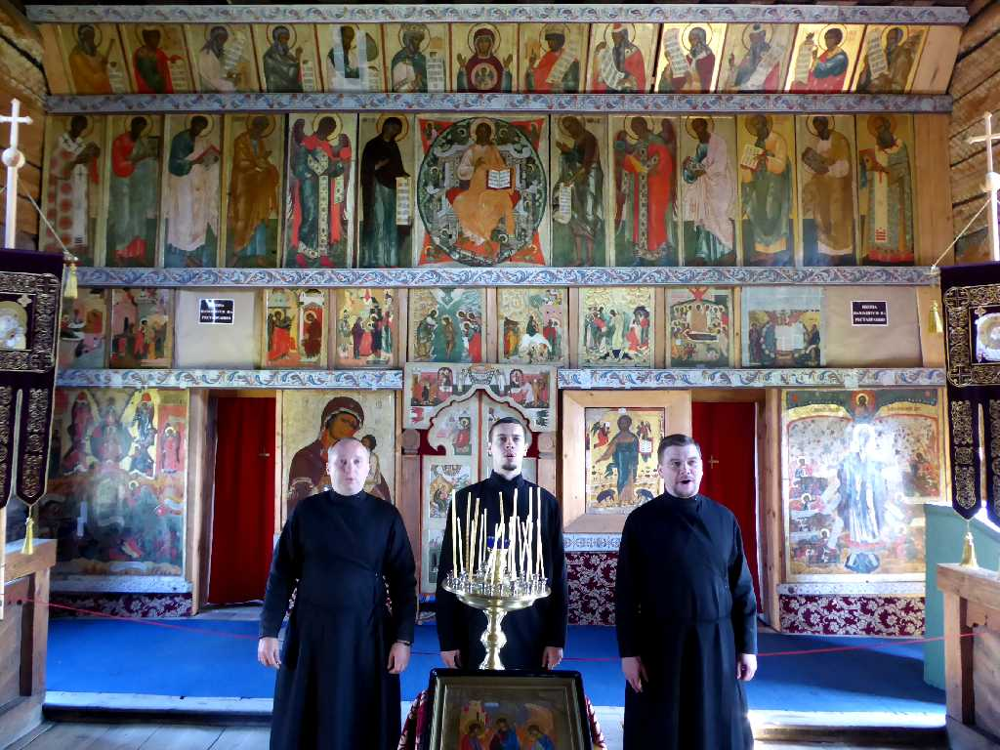
Altar Pokrovskaya church
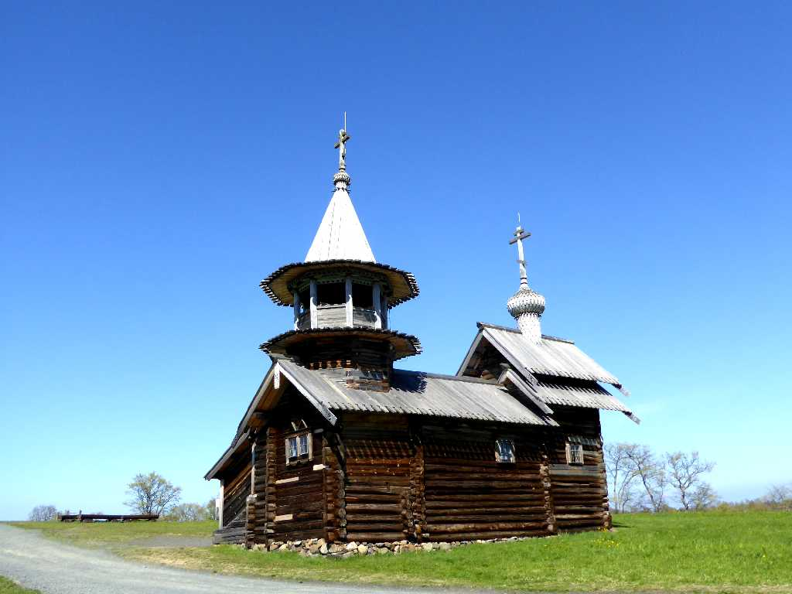
Mikhail church
天使首ミハイル聖堂
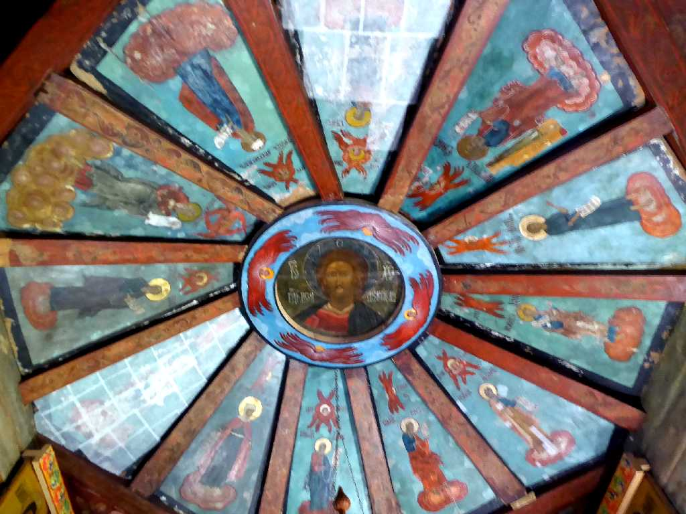
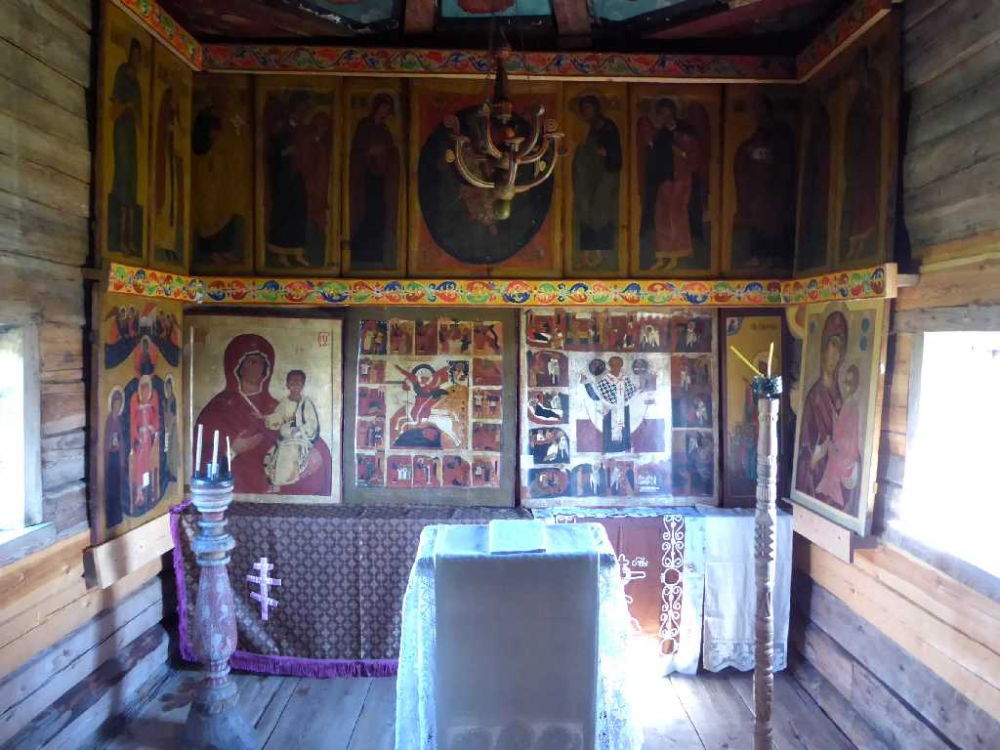
Altar Mikhail church
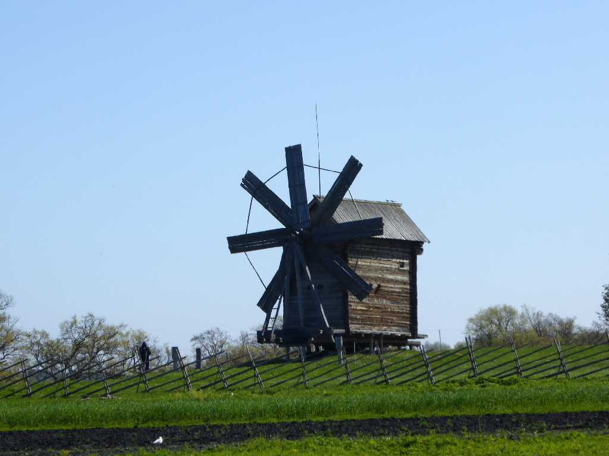
Windmill
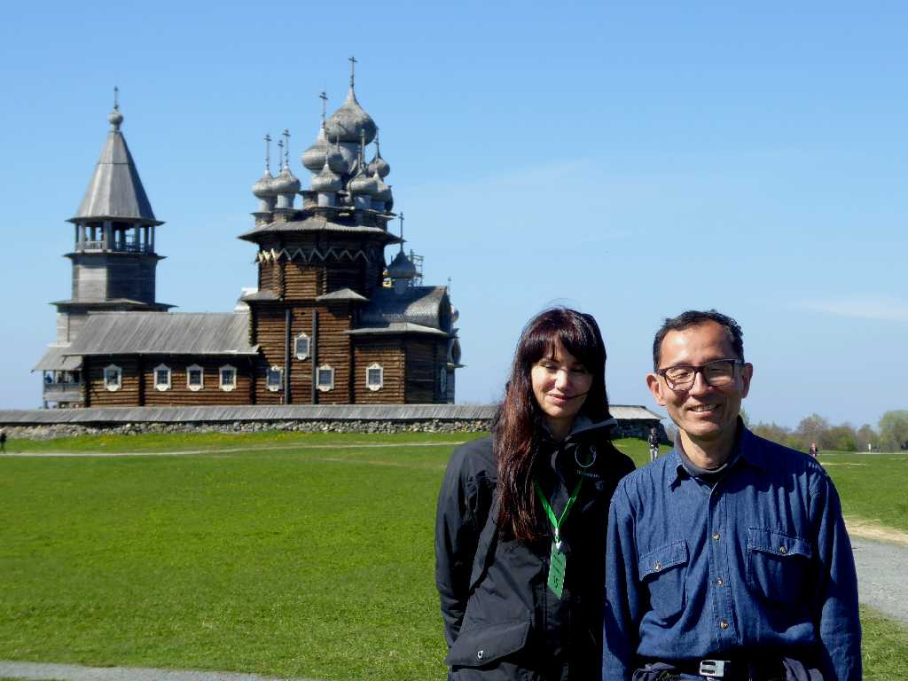
June 8 2017 Kizhi
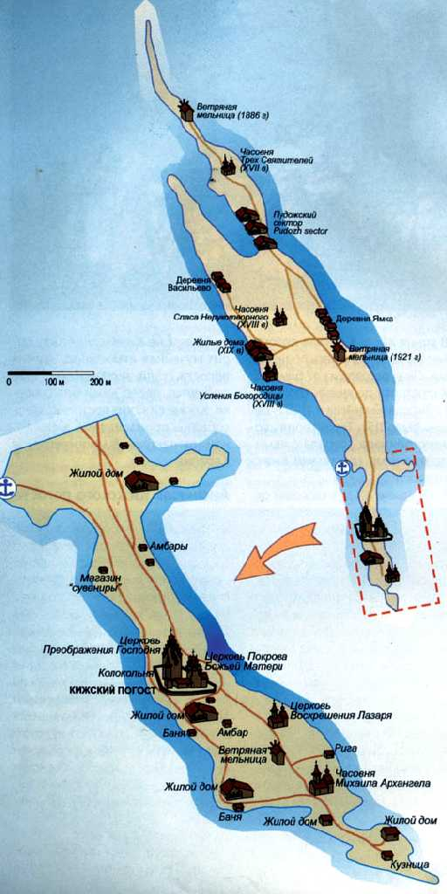